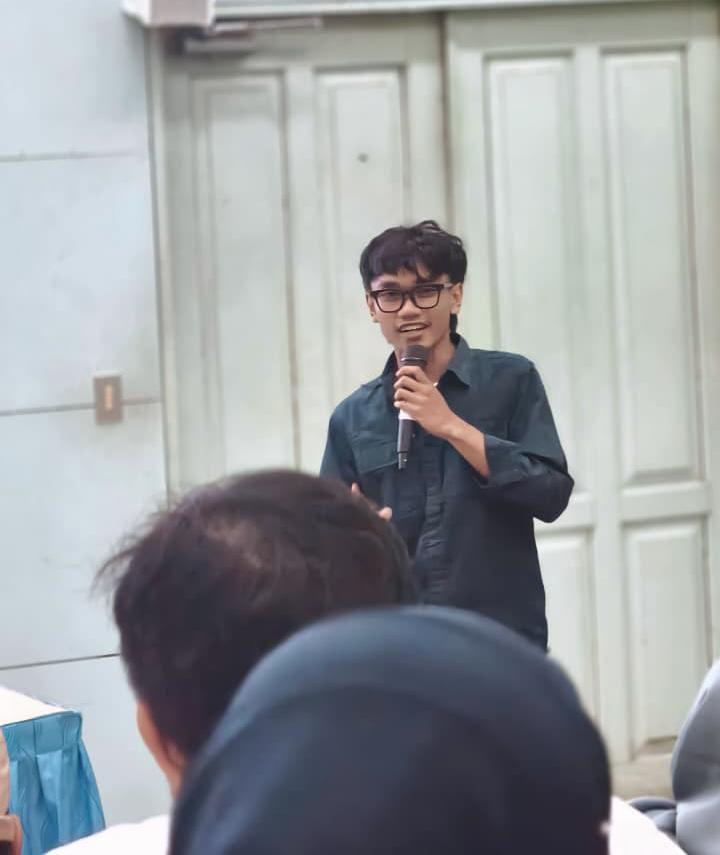
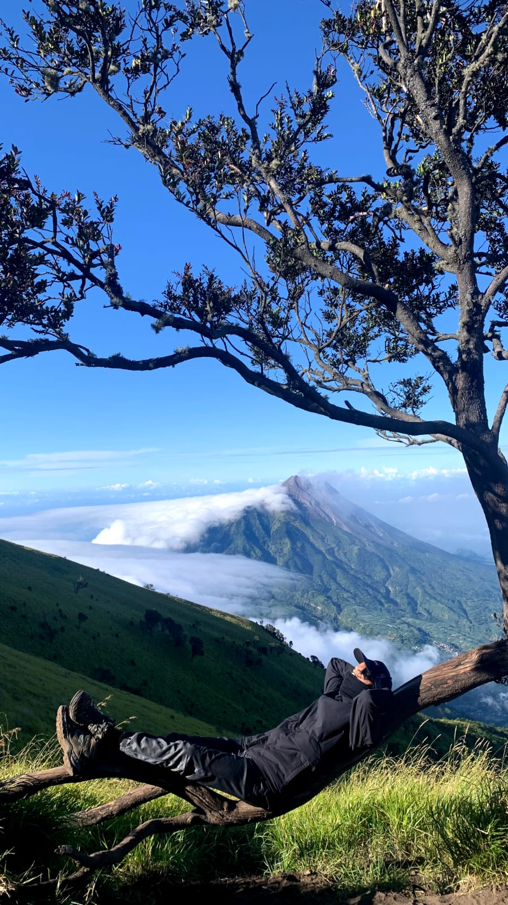
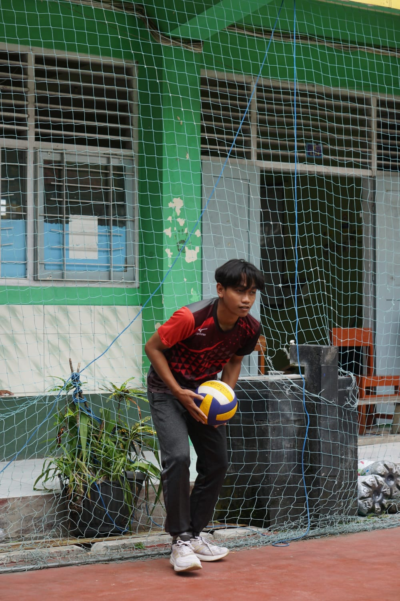

Ketua
Rohis / Multimedia / Sman 1 Sedayu
- Mengkoordinasi anggota untuk kesuksesan organisasi.
- Menjalankan semua progam kerja yang ada.
Mahasiswa Manajemen Informasi Komunikasi yang suka belajar hal baruuu!

Saya Sholih Al Fauzan biasa dipanggil Fauzan. Saya mahasiswa manajemen informasi komunikasi yang suka belajar hal baru apalagi dengan program studi saya. Ketika saya sedang berada di hal baru atau sedang melakukan hal yang baru saya sangat semangat dan penasaran akan hal itu
Perjalanan belajar, organisasi, dan pekerjaan saya.
Rohis / Multimedia / Sman 1 Sedayu
kpapbinar
Service
Hal-hal yang saya lakukan di waktu luang.

Saya suka mendaki gunung dan dari hobi ini saya banyak belajar hal baru.

Saya suka berolahraga seperti main bola, badminton, tenis meja, dll.